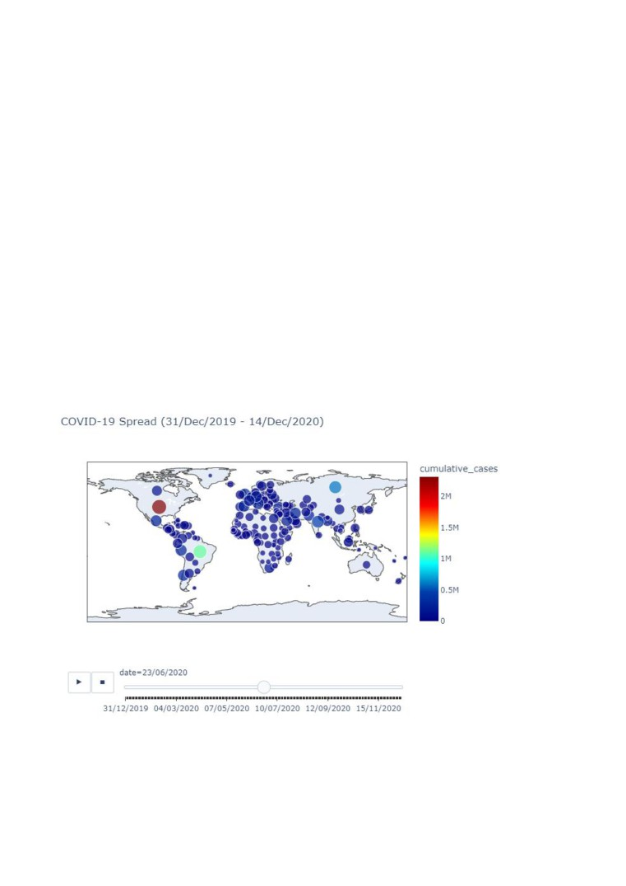
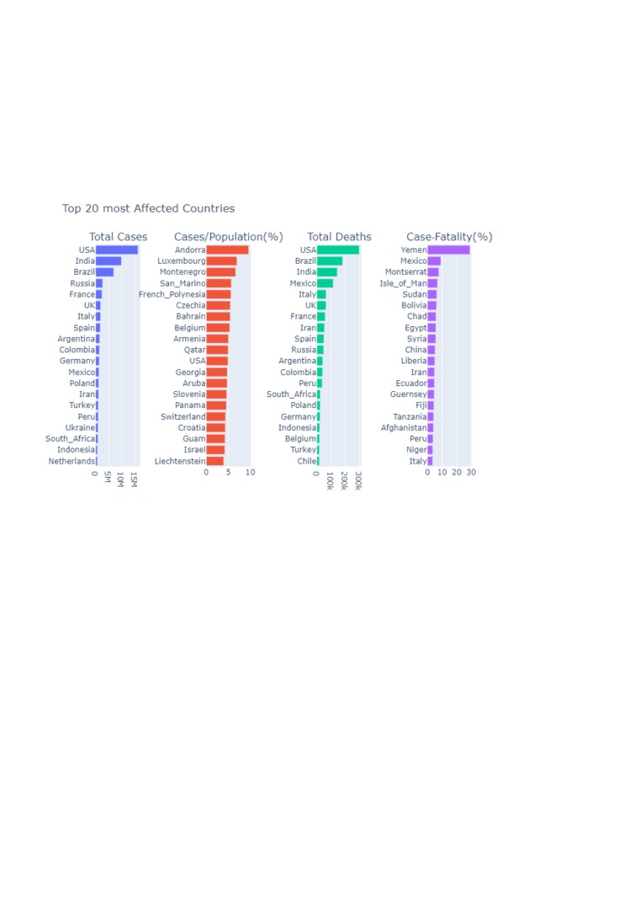

Covid Data Visualization
data-geographic-distribution-covid-19-cases-worldwide, and it includes daily cases and deaths information for Dec 31,
2019, to Dec 14, 2020 time period, for each country. I created the visualisation using the Plotly Python library.
Note: As the figures built for this analysis are interactive, I had to use links. Please follow the links below, to see the
visualization.
Covid Spread Visualization
The animation shows the spread of the virus across the countries. Till Mar 2020, most of the cases were announced in
China. There were also some cases announced in Thailand, Mexico, Japan, South Korea etc. End of February, the daily new
cases started increasing dramatically in the US and Italy. By the end of March, it spread all over the world. Starting from
March, the daily new cases in China started to decrease, whereas in the USA, Italy, and Spain things getting worse. You can
see that by the colours of the bubbles in the graph. In May, the daily new cases announced in the USA continued to stay
high, compared to the rest of the world. Starting from June, the daily new cases started to increase dramatically in Brazil,
and then, starting July, also in India. By the end of the year, the most affected countries were the USA, Brazil, and India.
Whereas in China, the daily new cases were low, comparing to other countries. To see the interactive animation, follow

Top 20 most affected countries
The Bar plots show the top 20 affected countries based on total cases, the share of cases in the population, the number of
deaths, and the share of deaths in total cases for each country. Even though most cases happened in the USA, the highest
rate of case fatality is in Yemen (29%), followed by Mexico (9.12%). To see the interactive visualization, follow the link:
Top 20 most affected countries, grouped by continent
The colours show the continents, which highlights that the big share of countries where the case fatality rate is in the top
20 are from Africa, whereas the big share of cases/population(%) is in Europe. That means that even though in Europe so
many people get infected, most of them recovered. On the contrary, in Africa, so many covid cases ended by death. To see